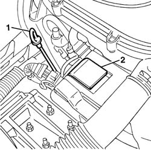
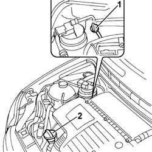

0010T11 engine oil check level and top up
- Path
- Procedures > 00 MAINTENANCE > 0010 NEW UNITS AND PLANNED MAINTENANCE > 0010T VEHICLE OIL AND FLUIDS > 0010T11 engine oil check level and top up
- Kind
- repair procedure (removal / refitting; the operation number is the code)
- Applies to
- all engines; all production periods
- Interactive page
- https://sloeber94.github.io/elrnDB-fPnd/en/#/2752376
Applies to: engines: 1.1, 1.2 8v; all production periods
1. Release the oil dipstick and check that the engine oil level is between the minimum and maximum references.
2. If the engine oil level is below the minimum level, remove the filler cap and top up with the recommended engine oil.
 | Type | Component | Name | Qty. |
|---|---|---|---|---|
- | Oli [l] | ENGINE LUBRICATION CIRCUIT | SELENIA 20K | - |
For the optimum operation of the engine in particularly harsh climatic conditions (temperatures below -20 degrees C), use the recommended oil for the engine lubrication circuit.
| Type | Component | Name | Qty. |
|---|---|---|---|---|
- | Oli [l] | ENGINE LUBRICATION CIRCUIT | SELENIA PERFORMER | - |

Applies to: engines: 1.3 JTD 16v; all production periods
1. Release the oil dipstick and check that the engine oil level is between the minimum and maximum references.
2. If the engine oil level is below the minimum level, remove the filler cap and top up with the recommended engine oil.
| Type | Component | Name | Qty. |
|---|---|---|---|---|
- | Oli [l] | ENGINE LUBRICATION CIRCUIT | SELENIA WR | - |

Applies to: engines: 1.1, 1.2 8v; all production periods
Check that the oil level is correct using the dipstick.
Fit the filler plug.
Start up the enigne and let it idle for about two minutes; switch off the engine and wait for a few minutes.
Check that the oil level is correct again.
Applies to: engines: 1.3 JTD 16v; all production periods
Check that the oil level is correct using the dipstick.
Fit the filler plug.
Start up the engine and let it idle for about two minutes; switch off the engine and wait for a few minutes.
Check that the oil level is correct again.
Topics that link to this page (12)
- 1016C10 SINGLE CYLINDER HEAD, REMOVED - OVERHAUL
- 1016C11 SINGLE CYLINDER HEAD-R R GASKET FOR VERSIONS WITH AIR CONDITIONER
- 1020A30 ENGINE OIL DRAIN PLUG - REPLACE
- 1020B12 CHAIN-DRIVE VALVE GEAR COVER - R.R. AND GASKET REPLACEMENT FOR MODELS WITH AIR-CONDITIONER
- 1032A12 CHAIN AND GEARS for timing system - R.R. for timing or Replacement.
- 1032B47 toothed drive pulley - r r for versions with air conditioner
- 1032B62 a/c duct pulley - r r
- 1032C40 Timing CHAIN TENSIONER PLATE - R.R.
- 1084B16 engine oil pump - r+r vehicles with a/c
- 1084B26 emgine oil intake duct - r r
- 1084B30 engine oil filter r r
- 1084B45 RIGID air supply PIPE between air-air heat exchanger and intermediate hose - R.R.